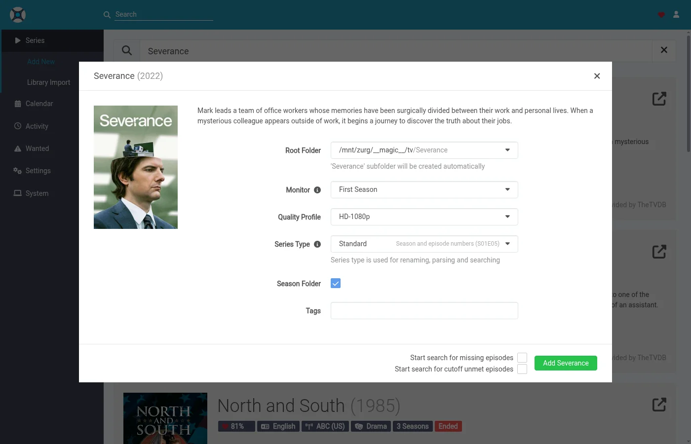
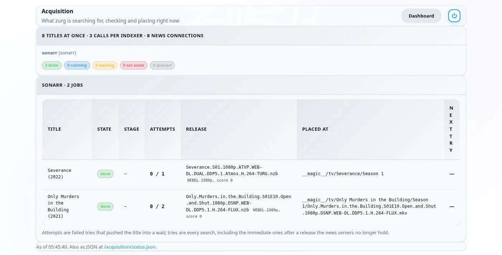
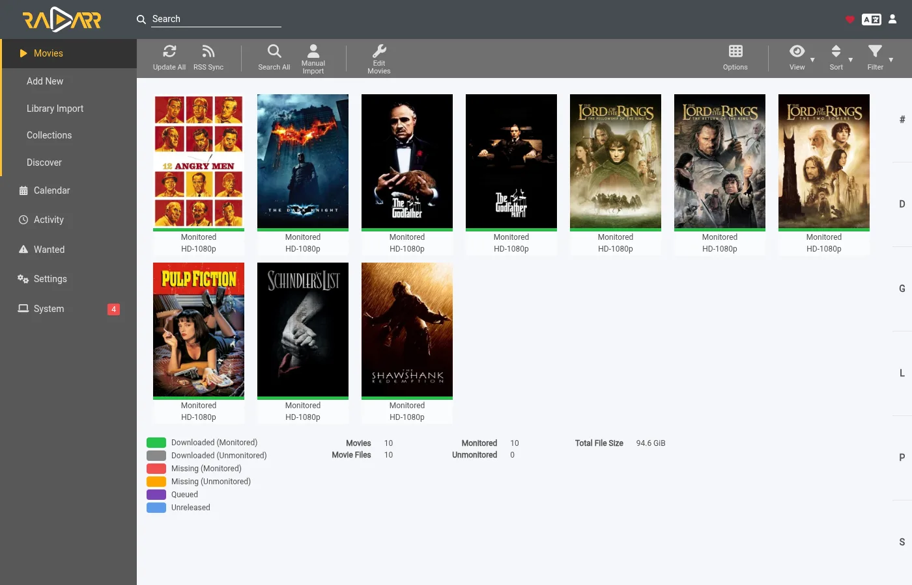

دع zurg يجلب ما يطلبه Sonarr و Radarr
هناك ثلاث طرق لاستخدام Sonarr وRadarr مع zurg. الاختيار الحقيقي هو: من يبحث، zurg أم *arrs؟ و
يمكن تشغيل الطريقتين الأوليين معًا. وتشتركان في مجلد __magic__ نفسه.
أيهما تختار
يتحقق الاثنان من الإصدار قبل أن يستورده *arr. لا يُوضع أبداً منشور Usenet ميت، ولا torrent غير موجود مسبقاً في حسابك.
في التثبيت الجديد، ابدأ بالبحث عبر zurg. هناك إعداد أقل، ولا توجد تخطيطة volumes يجب ضبطها بشكل صحيح. استخدم مسار عميل التنزيل إذا أردت اختيار الإصدارات يدوياً. وإذا كنت تفضّل انتظار أفضل إصدار في ملفك الشخصي بدلاً من ملف أول سريع، فشغّل best_first.
يتولى Radarr و Sonarr القائمة والمكتبة. أما zurg فيتولى الجلب. أضف فيلماً أو مسلسلاً بالطريقة المعتادة لديك، وسيجد zurg إصداراً على Indexers لديك. يتحقق من أن NZB ما زال موجوداً على خوادم الأخبار (في حال حساب torbox_nzb، أي أن TorBox جلبه)، أو أن حساب debrid لديك يحتوي بالفعل على torrent. ثم يضع الملف في مجلده داخل __magic__ ويطلب من Radarr أو Sonarr إعادة المسح. لا يُنزَّل شيء للاستيراد، ولا يُنسخ شيء.
لا يحتاج Radarr و Sonarr إلى Indexers ولا إلى عميل تنزيل لهذا الغرض. لا يبحثان أبداً ولا يلتقطان شيئاً. ما يزال ملف الجودة لديك هو ما يحدد ما يُسمح لـ zurg بأخذه.
أُخذت لقطات الشاشة من بناء zurg الذي يصدر ضمن إصدار nightly بتاريخ 26 سبتمبر 2026، مع Radarr 6.3.0.10514 و Sonarr 4.0.20.3014 في Docker. رأى الاثنان تركيب zurg على /mnt/zurg داخل الحاويات الخاصة بهما. لم يُعدَّل أي شيء فيها.
قبل أن تبدأ
- zurg يحتاج حساب Usenet أو debrid وفهرسًا واحدًا على الأقل من نوع Newznab أو Torznab. تُوضع الفهارس في إعدادات zurg تحت
acquisition.indexers. صفحة Watchlist and Seerr تشرح هذا القسم. magic.enabledقيمتهtrue. مصدرا Radarr وSonarr لا يبدآن بدونه، وسيكتب السجل ذلك. راجع__magic__.- Radarr وSonarr يقدران يرون مجلد التركيب الخاص بzurg. إذا ثبّتهما كتطبيقات عادية، فلكل نظام عقبة واحدة مذكورة في دليل Usenet. وإذا كانا في Docker على مضيف Linux، فهذا يعني ربط المجلد داخل الحاويات الخاصة بهما. اربط المجلد الأب مرة واحدة وسترى كل شيء من خلاله. وإذا كانا أيضًا يستقبلان التنزيلات من zurg كـ download client، فاستخدام volumeين لمجلد التنزيل ومجلدات الجذر سينسخ كل عملية استيراد. راجع volume واحد.
- تشغّل nightly بتاريخ 26 سبتمبر 2026 أو بعده. الإصدارات الأقدم لا تعرف مصدري
radarrوsonarr.
1. أخبر zurg عن Radarr و Sonarr
أضف مصدر radarr ومصدر sonarr تحت acquisition في config.yml ثم أعد تشغيل zurg. لا يوجد نموذج في لوحة التحكم لهذا القسم حتى الآن. احذف المصدر الذي لا تستخدمه.
acquisition:
quality: best
indexers:
- name: my-indexer
url: https://indexer.example
api_key: YOUR_INDEXER_API_KEY
sources:
- name: radarr
type: radarr
enabled: true
url: http://radarr:7878 # http://localhost:7878 when Radarr is an ordinary app beside zurg
api_key: YOUR_RADARR_API_KEY
library_path: /mnt/zurg/__magic__
check_every_secs: 30
- name: sonarr
type: sonarr
enabled: true
url: http://sonarr:8989 # http://localhost:8989 likewise
api_key: YOUR_SONARR_API_KEY
library_path: /mnt/zurg/__magic__
check_every_secs: 30url وapi_key يخصّان التطبيق نفسه. مفتاح الـ API موجود تحت Settings > General في الاثنين. check_every_secs هو عدد الثواني بين كل مرة يسأل فيها zurg عمّا يريدونه. كل استعلام يرسل طلبًا واحدًا للقائمة. نفس المفهرسات تخدم المصدرين.
library_path هو المكان الذي يرى فيه التطبيق مجلد __magic__ الخاص بـ zurg. يحتاجه zurg ليحوّل مجلد Radarr إلى مكان داخل __magic__. مع الإعداد أعلاه، فيلم يحتفظ به Radarr في /mnt/zurg/__magic__/movies/Heat (1995) يُوضع في movies/Heat (1995) داخل __magic__ الخاص بـ zurg. مسارات Windows مثل Z:\__magic__ تعمل بالطريقة نفسها. لا تحذف library_path إلا إذا كان التطبيق يعمل على الجهاز نفسه الذي يعمل عليه zurg ويرى نقطة التركيب التي يركّب عليها zurg.
concurrency هو عدد العناوين التي يعمل عليها zurg في وقت واحد، والقيمة الافتراضية ثمانية. القائمة الكبيرة لا بأس بها مع القيمة الافتراضية. الأمر فقط يستغرق وقتًا أطول.
2. ضع المجلدات الجذرية داخل __magic__
يجب أن يكون مجلد الجذر داخل __magic__ وفي مستوى واحد أسفله. الشكل الذي تنسخه هو /mnt/zurg/__magic__/movies لـ Radarr و/mnt/zurg/__magic__/tv لـ Sonarr (/Volumes/Zurg/__magic__/movies على macOS، وZ:\__magic__\movies على Windows). ليس __magic__ نفسه، ولا __magic__/__all__. أي عنوان يقع مجلده في مكان آخر يتم تخطيه، ويذكر zurg ذلك مرة واحدة في سجله.
في Radarr، افتح Settings > Media Management وأضف مجلد الجذر.

صفحة Sonarr مشابهة. أضف مجلد الجذر الخاص بها ضمن Root Folders.

Season Folder Format في صفحة Sonarr هو الاسم الذي يعطيه zurg لمجلد أي موسم جديد. الموسم الذي فيه ملفات بالفعل يحتفظ بالمجلد الذي توجد فيه. المساحة الحرة التي يعرضها أي من التطبيقين هي المساحة التي يبلغ عنها الـ mount. ولا يكتب أي من التطبيقين فيه أبدًا.
3. أضف العناوين مع إيقاف البحث
أضف الأفلام والمسلسلات بالطريقة نفسها التي تستخدمها الآن: يدوياً، أو من قائمة، أو من تطبيق طلبات. الشيء الوحيد الذي يجب تغييره هو عملية البحث. zurg هو من يقوم بالبحث، لذلك لا يجب أن تقوم arrs بذلك.
Radarr
هذا الشرح يستخدم قائمة استيراد. افتح Settings > Import Lists وأضف قائمتك أو عدّلها.

في إعدادات القائمة، أبقِ Enable Automatic Add مفعّلاً وأوقف Search on Add. اختر ملف الجودة والمجلد الجذر من الخطوة 2. اضبط Minimum Availability على ما تريده. ينتظر zurg حتى يعتبر Radarr الفيلم متاحاً قبل أن يبحث عنه.

عندما تضيف فيلماً واحداً يدوياً، يسمى المفتاح نفسه Start search for missing movie. أوقفه أيضاً.
Sonarr
عند إضافة مسلسل يدويًا، اترك خيار Start search for missing episodes وStart search for cutoff unmet episodes غير محددين. يحدد Monitor ما الذي سيبحث عنه zurg. هذا المسلسل مضبوط على موسمه الأول.

تحتوي قائمة الاستيراد في Sonarr على الخيار نفسه في إعداداتها. أوقف البحث فيها أيضًا.
4. اترك المفهرسات ومدراء التنزيل فارغة
هذا هو كل الإعداد على جانب arr. يمكنك ترك صفحة Indexers فارغة.

وكذلك صفحة Download Clients يمكن أن تبقى فارغة.

Sonarr مثل ذلك تماماً. إذا كان أيٌّ من التطبيقين لديه indexers وdownload client من إعداد سابق، فسيستمر في العمل. عندها سيجلب التطبيق العناوين نفسها بالتوازي مع zurg. أوقف البحث التلقائي على تلك الـ indexers، أو احذفها بالنسبة للعناوين التي يتولاها zurg.
5. راقب عملها
افتح لوحة تحكم zurg. Acquisition هو خيار جديد في الروابط السريعة.

تعرض الصفحة كل عنوان يعمل عليه zurg وما الذي يفعله في هذه اللحظة. نفس البيانات موجودة في /acquisition/status.json إذا أردت قراءتها من سكربت.
الأفلام
هذه قائمة بعشرة أفلام بعد نحو نصف دقيقة من إضافة Radarr لها. خمسة منها حصلت على ملفها، وجارٍ إخبار Radarr بها. الباقي تم الانتهاء منه.

كل صف يمثل فيلماً واحداً. State يوضح حالته. Stage يوضح ما الذي يفعله zurg له في هذه اللحظة. أولاً يقرأ zurg نتائج المفهرسات (indexers). ثم يقيّم المرشحين. ثم يقرأ ملف NZB للإصدار ويتحقق من المنشور لدى خوادم الأخبار. وأخيراً يضع الملف في مكانه. Release هو المنشور الذي أخذه zurg، وما فهمه محلل Radarr منه. Placed at هو المسار داخل __magic__ حيث يوجد الفيديو الآن. أي عنوان لم تعد خوادم الأخبار تحتفظ به ينتقل فوراً إلى المرشح التالي. أما العنوان الذي لا يوجد فيه أي شيء صالح فيُستبعد مع عرض السبب.
بعد دقيقة واحدة يكون كل شيء قد انتهى.

المسلسلات
تظهر مواسم Sonarr في الصفحة نفسها. كل صف يمثل موسمًا واحدًا أو ملف حلقة واحدة يقوم zurg بترقيته. إليك مسلسلين أُضيف إليهما الموسم الأول مع تفعيل المراقبة بعد نصف دقيقة من إضافتهما. كلا الموسمين انتهى بثهما ولم يكن لهما ملفات، فحاول zurg الحصول على حزمة موسم لكل منهما. حزمة Severance موجودة في مجلد موسمها، وSonarr يُبلَّغ بذلك. أما حزمة Only Murders فهي قيد الفحص لدى خوادم الأخبار.

بعد نحو دقيقتين من إضافتهما اكتمل الموسمان. كانت حزمة Only Murders ينقصها أجزاء على خوادم الأخبار، فتجاهلها zurg وأخذ الحلقات العشر واحدة تلو الأخرى بدلًا من ذلك. يعرض صفها آخر حلقة تم وضعها.

6. ما يعرضه Radarr و Sonarr
تمتلئ المكتبات تدريجيًا مع انتهاء عمليات إعادة الفحص. كل فيلم في هذه القائمة صار له ملفه.

تُظهر صفحة الفيلم الملف داخل مجلده ضمن __magic__، مع الجودة التي قرأها Radarr من الاسم.

في Sonarr، لكل الحلقات العشر ملفها في مجلد الموسم، مع الجودة التي قرأها Sonarr من كل اسم.

قسم Activity يبقى فارغًا في التطبيقين. لا يوجد أي عنصر في قائمة الانتظار ولا أي حدث التقاط أو استيراد، لأنه لم يتم التقاط أي شيء. الملف ببساطة ظهر في المجلد، وعملية إعادة الفحص التي طلبها zurg التقطته.

ويترتب على ذلك أمران. قائمة الحظر الخاصة بالتطبيقات لا تُكتب أبدًا. ويحتفظ zurg بسجله الخاص للمنشورات التي لم تعد خوادم الأخبار تحتفظ بها، فلا يلتقطها مرة أخرى. والعنوان الذي تحذفه من Radarr أو Sonarr لا يُحذف من حسابك. يعود الملف إلى الظهور ضمن __all__ مثل أي إصدار آخر.
كيف يختار zurg الإصدار
ملف الجودة الخاص بك هو البوابة. كل إصدار سيأخذه zurg يمر أولاً عبر المحلل (parser) الخاص بالتطبيق. يجب أن يكون العنوان هو العنوان الصحيح. يجب أن تكون جودته مسموحة بموجب الملف. يجب أن تصل درجة التنسيق المخصص (custom format) الخاصة به إلى الحد الأدنى الذي يطلبه الملف. ويجب أن يكون حجمه ضمن الحدود الموجودة تحت Settings > Quality. أي إصدار يفشل في أي من هذه الشروط لن يُؤخذ.
الأفلام
من بين الإصدارات التي يسمح بها الملف الشخصي، يأخذ zurg الإصدار الأسرع في التأكد منه. تأتي المنشورات التي تحتوي على ملف فيديو واحد أولاً، لأنها الأكثر احتمالاً أن تكون ما زالت مكتملة على خوادم الأخبار. وتأتي إصدارات الويب قبل إصدارات Blu-ray للسبب نفسه. أما مجموعات الأرشيف متعددة الأجزاء فهي الخيار الاحتياطي.
بدلاً من ذلك، يتم تطبيق ترتيب تفضيلات الملف الشخصي عبر الترقيات. عندما يسمح الملف الشخصي بالترقيات ويكون الملف المضاف أدنى من الـ cutoff، يبحث zurg عن إصدار أفضل بمجرد أن يتوفر للفيلم ذلك. ولا يستبدل الملف إلا إصدار أفضل بشكل صارم، ولا يتم أخذ جودة أقل أبداً.
يبقى الفيلم المؤرخ بتاريخ مستقبلي في الانتظار حتى يعلنه Radarr متاحاً. ويُرفض البحث الذي يعثر على الفيلم الخطأ، لأن Radarr لا يطابق العنوان مع أي فيلم في مكتبتك.
المسلسلات
الموسم قطعة عمل واحدة. عندما تكون كل حلقات الموسم مفقودة ويكون الموسم قد انتهى عرضه، يجرّب zurg حزمة الموسم أولاً. وإلا فإنه يأخذ الحلقات المفقودة واحدة تلو الأخرى. الموسم الذي فيه بعض ملفاته بالفعل لا يأخذ حزمة أبداً، لأن ذلك سيضع نسخة ثانية من تلك الحلقات في المجلد.
يجب أن يكون الإصدار لهذا المسلسل ولهذا الموسم. يجب أن تكون الحزمة الموسم كاملاً. يجب أن يكون إصدار الحلقة هو تلك الحلقة وحدها. حد الحجم يخص مدة تشغيل الحلقات التي يحتويها الإصدار.
عندما تكون حلقة واحدة من الموسم ليس لها ما يمكن أن يأخذه zurg بعد، بينما تُوضع بقية الحلقات، يُبلَّغ Sonarr بها فوراً. تُبحث الحلقة المفقودة مرة أخرى لاحقاً وفق جدول إعادة المحاولة المعتاد.
ملف الحلقة الذي هو دون الحد المطلوب يُعد ترقية عندما يسمح الملف الشخصي بالترقيات. ودون الحد المطلوب يعني دون جودة الحد المطلوب أو دون نقاط التنسيق المخصص للحد المطلوب. يحسب zurg الحالتين كما تفعل قاعدة الترقية في Sonarr. أما قائمة Cutoff Unmet في Sonarr فتُظهر الأولى فقط. الترقية تستبدل ملف حلقتها وحده، ويبقى بقية مجلد الموسم في مكانه.
أشياء يجب معرفتها
- أي تغيير في كتلة
acquisitionداخلconfig.ymlيحتاج إلى إعادة تشغيل. يقرأ zurg الملف فقط عند بدء التشغيل. - إعادة المسح هي الخطوة الأخيرة، وتنتظر دور العمل الخاص بالتطبيق. مباشرةً بعد أن تضيف قائمة عدداً كبيراً من الأفلام، يُحدّث Radarr كل واحد منها أولاً. والملفات تكون موجودة في مكانها أثناء ذلك.
- Analyse video files يقرأ بداية كل ملف عبر الـ mount. يعمل هذا الخيار، لكنه أبطأ جزء في القائمة الكبيرة. أبقِه مفعّلاً إلا إذا كنت تعرف أنك لا تريد معلومات الوسائط.
- العناوين غير المراقبة تُترك كما هي. ويشمل ذلك الأفلام والمسلسلات والمواسم والحلقات. وكذلك العناوين التي يقع مجلدها خارج
__magic__. - المسلسلات الأنمي والبرامج اليومية والحلقات الخاصة تحتاج إلى نسخة nightly من 5 نوفمبر 2026 أو أحدث. تُعثر على حلقات البرنامج اليومي حسب يوم بثها، وحلقات الأنمي حسب الرقم الذي يعدّها به العرض (
Jujutsu Kaisen - 30هي الحلقة السادسة من الموسم الثاني)، والحلقات الخاصة تُبحث عنها كالموسم 00. الملف الذي يُوضع لأنمي أو برنامج يومي يُسمّىJUJUTSU KAISEN - S02E06 - <the release's own name>، لأن إعادة المسح في Sonarr تقرأ الملف من اسمه وحده، وكانت ستضع2nd Season - 06في الموسم 1. الحلقة الخاصة التي اسمها عنوانها فقط، دونS00Exx، لا يمكن مطابقتها، ولا حتى من Sonarr. في النسخ الأقدم يُتخطى كل مسلسل من هذا النوع مع سطر واحد في السجل.
الوصف الكامل للمصدرين موجود في قائمة المشاهدة وSeerr.